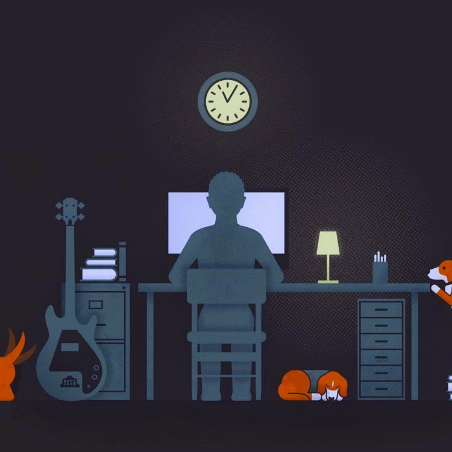

<
>
蓝骨
AboutMe 安全从业者 辣鸡程序员 未入门菜鸡
BLOG
WEIBO
Friends

任何一个行业都是一个江湖，有江湖就有故事，追名逐利的人喜欢被写入故事，踏实做事的人却希望被隐匿。 久而久之，江湖上的故事越来越虚名浮利，听故事的人也越来越坐井观天。 岂不见无数江湖武侠小说，开篇的人物总是让我们误以为是江湖大侠，看着看着才发现一山更比一山高，到最后才发现开篇人物简直是不入流的小啰啰。 而真正的高人，反而隐匿成传说。